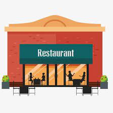

History
The two owners begin as fast food employees at a local McDonald's. After both deciding to become owners of their own burger restaurant, they resign from their jobs and take a massive risk.
Full on Beef begins in 2011. With an empty building, a bank loan, and dreams and hopes, Full on Beef is made from the ground up and put in business.
Advertisements, commericals, and catering for special events brings customers to restuarant and helps it take off quickly.
Full on Beef becomes a massive and big hit in Pittsburgh and the two owners are proud to own the establishment.